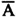
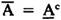
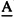
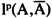
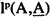
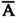
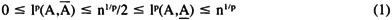
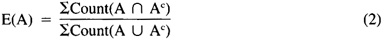

by Abraham Kandel
CRC Press, CRC Press LLC
ISBN: 084934297x Pub Date: 11/01/91
|
|
Fuzzy Expert Systems
by Abraham Kandel CRC Press, CRC Press LLC ISBN: 084934297x Pub Date: 11/01/91 |
| Previous | Table of Contents | Next |
A fuzzy set A is a fit vector. A = (.2 0 .5 .7) is a fuzzy set. A is a point in the unit hypercube In = [0,1]n. Every set is a fuzzy set since Bn ⊂ In. (An amazing fact is B ∞ = I ∞, since I ∞ = c ∞ = 2∞·∞ = 2 ∞ = B ∞, where ∞ is countable infinity and c is the cardinality of the continuum.) A is a proper fuzzy set if A ∈ In/Bn, if some fit value of A is not 0 or 1. F(2X) is the fuzzy power set of X, the nonfuzzy set of all fuzzy subsets in X. A fuzzy set A is equivalent to some mapping mA into fit values: mA: X → [0,1]. As stated, there are as many fuzzy subsets of any set as there are real numbers. Therefore, F(2X) = In. If A is a finite discrete fuzzy set — i.e., mA maps into a finite discretized set, mA: X → {d1, . . . , dm} — then there are mn discrete fuzzy sets or messages. As such, fuzziness is characterized by the cardinality of range sets. The fit value, or fuzzy unit value, mA(x) indicates the degree to which x fits in the subset A, its elementhood or belongingness.
Fuzzy set intersection, union, complement, 1p distance, and cardinality have been defined previously for nonfuzzy sets. In particular, the cardinality12 of A is called the sigma-count:52-54 ΣCount(A) = ΣmA(xi), the sum of fit values. If A = (.2 0 .5 .7), ΣCount(A) = 1.4. Therefore, fuzzy cardinality is a real number, not necessarily an integer. The sigma-count is a positive measure36 that generalizes classical counting measure in combinatorics. The height H(A) of A is the largest fit value in A: H(A) = max{mA(x1), . . . , mA(xn)}.
The fit vector A can also be interpreted as a possibility distribution.51 In is the box of possibilities. In the special case when ΣCount(A) = 1, A is a probability distribution. The set of probability distributions (convex coefficients) in In forms a simplex of dimension n - 1. In I2 the probability simplex is a line. In I3 it is a solid triangle. In I4 it is a tetrahedron, and so on up. For example, the probability simplexes in the unit square and unit cube are illustrated here with appropriate shading. Note that the locus of equipossible distributions always intersects the probability simplex exactly at the point (1/n, . . . , 1/n), the uniform distribution with maximum probabilistic (Boltzmann/von Neumann/Shannon) entropy,50 as discussed later (see Figure 1). Hence, our geometric interpretation of fuzzy sets puts probability theory in a box — and in a corner at that!
We now introduce some new fuzzy concepts.39 How fuzzy is A? If A is nonfuzzy, a vertex of In, then A has 0 fuzziness, or 0 membership in the set of fuzzy or uncertain objects. If A = (.5, . . . , .5), then A has maximal fuzziness 1 since A = A ∩ Ac = A ∪ Ac = Ac! All other fuzziness lies between these extremes. Fuzziness is captured by the nonprobabilistic entropy13 of A, denoted E(A). We can naturally define a fuzzy entropy from first-principles reasoning. Given the fuzzy power set In, we naturally have some distance measure available, i.e., a 1p distance, which essentially arises because [0,1] is linearly ordered (as in the theory of utility functions in microeconomics). As such, for any A ∈ In, there exists a nearest nonfuzzy neighbor  and a farthest nonfuzzy neighbor . is obtained for any lp metric by rounding the fit value to 0 or 1 and . If A = (.2 0 .5 .7), then = (0 0 1 1) and  = (1 1 0 0). Let a =  and b =  (see Figure 2).
Then E(A) = a/b. For if A is nonfuzzy, then A =  and, thus, E(A) = 0. If A = (.5, . . . , .5), then A is equidistant to every nonfuzzy set (vertex), since it is the midpoint of the cube In. Thus a = b, and thus E(A) = 1. If A = (.2 0 .5 .7), then E(A) = a/b = 1/3. These relationships ultimately follow from the metrical property:

The key theorem39 on 11 fuzzy entropy is

the ratio of fuzzy overlap to underlap, with a similar result for general lp metrics. Hence, the entropy measure a/b captures the characteristic aspects of fuzziness since A is properly fuzzy if A ∈ In/Bn if A ∩ Ac ≠ Ø if A ∪ Ac ≠ X. Phrased another way, if we do not know something A with certainty, then we do not know its opposite Ac with certainty either, and, therefore, there is overlap (and underlap) between the two concepts. Fuzzy theorists will also note that for t-norms29,31,45 T and t-conorms S, that since T ≤ min ≤ max ≤ S, replacing min and max in Equation 2 with any other T and S produces an E′ such that E′ < E; in particular, E(A) = 1 for A = (.5, . . . , .5) in Equation 2 if T = min and S = max. As such, in some sense we have derived the fundamental fuzzy operations of min, max, and negation from entropy first principles.
| Previous | Table of Contents | Next |
)
){kind=link}